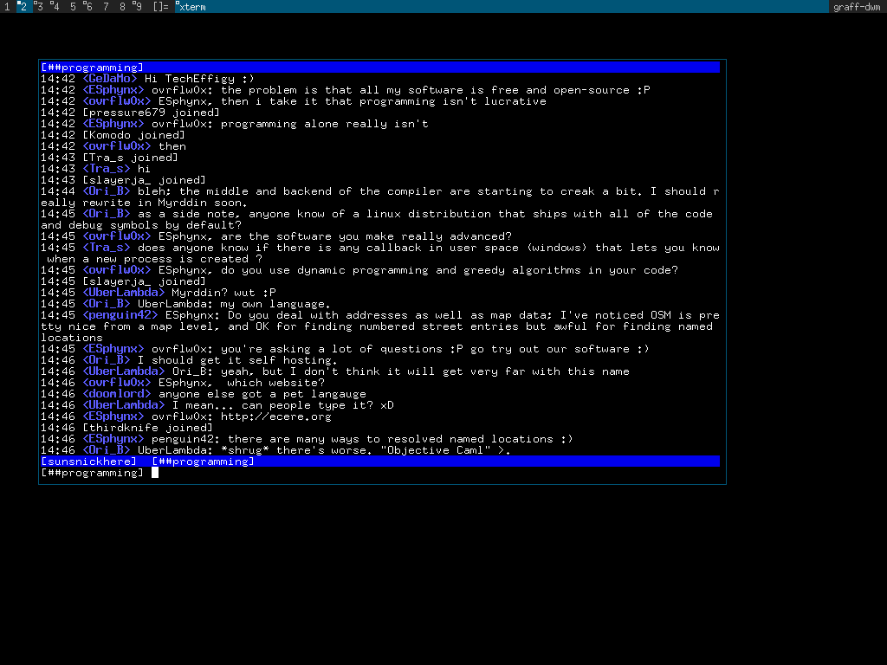

arbsh
DESCRIPTION:
arbsh is a collection of original software written by CM Graff et al.
Navigating to a subdirectory of arbsh and inspecting the README
will reveal more about what that particular project contains.
HIER:
arbprec/
An arbitrary precision mathematics library.
readline/
Readline line editing library. An editline/readline like
implementation.
gsh/
Gsh supports a subset of POSIX shell.
posix/
Userland utilities such as cp, ls, fetch, dd, find etc.
implemented to subsets of their POSIX specifications.
ironwill/
A cross compiling toolchain and package build system similiar
to buildroot or yocto but much simpler.
newlibm/
A set of mathematics functions to operate on double precision
types. This area contains code derived from Sun's fdlibm. And
is the only part of of arbsh which is not 100 percent original.
arbsh will also retrieve and build a collection of heavily modified
outside software which is also maintained by CM Graff et al.
graflibc
graflibc is a new libc that draws on parts of musl libc.
https://github.com/cmgraff/graflibc
cube-zero
A verion of the cube 1 3D video game which is being slowly
rewritten in C. https://github.com/cmgraff/cube-zero
ash
A new version of the Almquist shell forked from debian dash.
https://github.com/cmgraff/ash
BUILDING:
make
make install DESTDIR=$(pwd)/myroot
Install a single component of arbsh:
cd arbsh/posix
make
make install DESTDIR=/path/to/target
CROSSBUILDING:
Use arbsh's internal gcc based cross compile system to build itself
or outside software. Links and build specifics are supplied for 50
target packages.
make ironwill
export `make buildenvars`
make
make install DESTDIR=$(pwd)/myroot
For finer grained control over the cross toolchain (such as changing
architectures or using the toolchain to build other OS)), view the
documentation within toolchain/README and run the build system from
toolchain/.
PORTABILITY:
To some extent all of the components of arbsh are standalone. The
core functionality (excluding the toolchain) only depends on the
standard C library and a few POSIX extensions to it. This being the
case it should work fine on Linux, mac, NetBSD and FreeBSD.
CONTACT:
CM Graff cm0graff@gmail.com
UPSTREAM:
https://github.com/cmgraff/arbsh
IMAGES:

REFERENCES:
http://pubs.opengroup.org/onlinepubs/9699919799
http://www.iso-9899.info/wiki/The_Standard
http://www.csie.ntu.edu.tw/~r92094/c++/VT100.html
https://www.gnu.org/software/grub/manual/multiboot/multiboot.html
RELEASES:
http://www.csit.parkland.edu/~cgraff1/arbsh-0.4a.tar.gz
http://www.csit.parkland.edu/~cgraff1/arbsh-0.4b.tar.gz